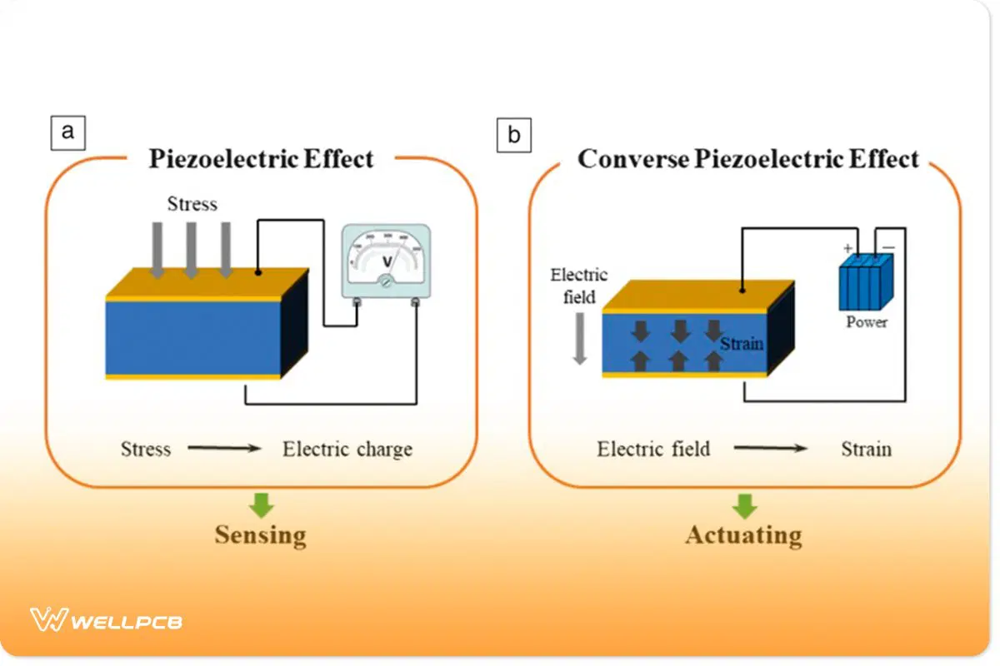
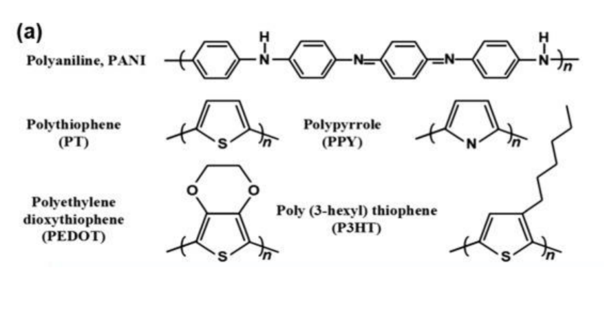

Piezoelectricity
The Piezoelectric effect is a unique property where mechanically deforming a material (like compressing it) causes a current to flow and charge its faces[cite: 11]. The process works in reverse as well: applying an electrical field to the material will cause it to physically deform[cite: 11].
This makes these materials perfect for Transducers, which measure changes in pressure, force, or acceleration by converting those physical actions directly into an electrical signal[cite: 11].
- Common Examples: Quartz (SiO2), Lead Zirconate Titanate (PZT), and Barium Titanate (BaTiO3)[cite: 11].

Conductive Polymers
While traditional polymers (like plastics and rubber) are excellent insulators, Intrinsically Conducting Polymers (ICPs) are a special class of polymers that actually conduct electricity[cite: 11].
Their conductivity arises from their conjugated backbone—a structural chain of alternating double and single bonds[cite: 11]. The overlapping p-orbitals in this structure create a system of delocalized π-electrons, allowing electrical charge to flow freely through the polymer[cite: 11].
- Common Examples: Polyaniline (PANI), Polypyrrole (PPy), and PEDOT[cite: 11].

Practice Exercises
Test your knowledge on Piezoelectricity and Conductive Polymers.
1. What defines the Piezoelectric effect?
A) Generating heat when an electric current is passed through a wire
B) Generating an electrical current when a material is mechanically deformed
C) Emitting light when exposed to high temperatures
2. Which of the following components relies heavily on piezoelectric materials to convert physical pressure into electrical signals?
A) Transducers
B) Capacitors
C) Load cells
3. Which of the following is a classic example of a piezoelectric material?
A) Polyethylene
B) Pure Silicon
C) Quartz (SiO2)
4. What specific structural feature allows Intrinsically Conducting Polymers (ICPs) to conduct electricity?
A) A sea of free metallic electrons
B) A conjugated backbone with alternating double and single bonds
C) A highly ordered Face-Centered Cubic (FCC) lattice
5. Which of the following is an example of an Intrinsically Conducting Polymer?
A) Polyaniline (PANI)
B) Teflon (PTFE)
C) Polyvinyl chloride (PVC)